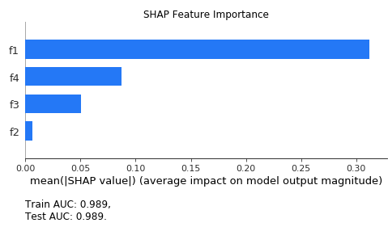
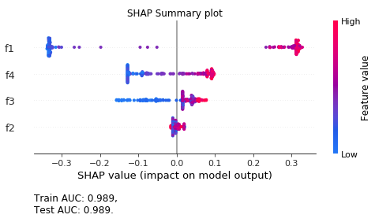
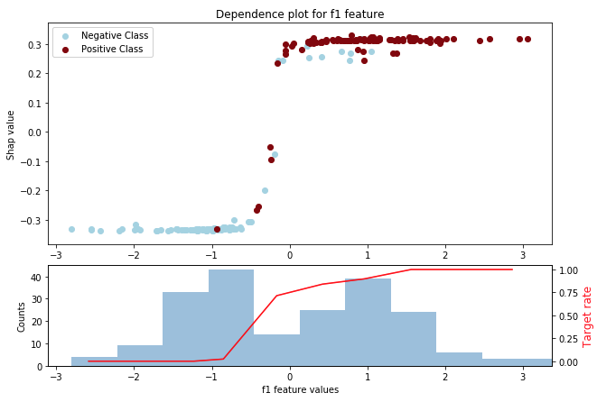
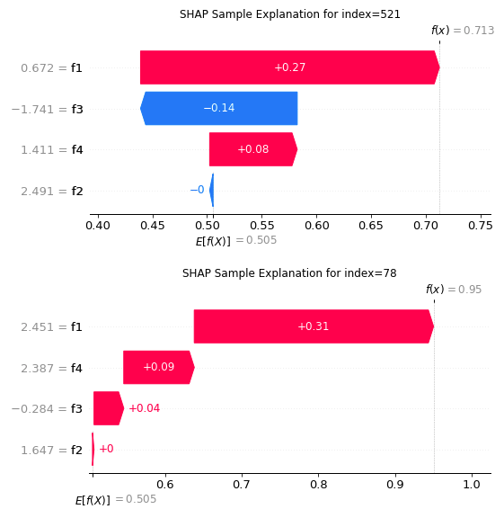

Model Interpretation using SHAP¶
The aim of this module is to provide tools for model interpretation using the SHAP library. The class below is a convenience wrapper that implements multiple plots for tree-based & linear models.
ShapModelInterpreter
¶
This class is a wrapper that allows to easily analyse a model's features.
It allows us to plot SHAP feature importance, SHAP summary plot and SHAP dependence plots.
Examples:
from sklearn.datasets import make_classification
from sklearn.ensemble import RandomForestClassifier
from sklearn.model_selection import train_test_split
from probatus.interpret import ShapModelInterpreter
import numpy as np
import pandas as pd
feature_names = ['f1', 'f2', 'f3', 'f4']
# Prepare two samples
X, y = make_classification(n_samples=5000, n_features=4, random_state=0)
X = pd.DataFrame(X, columns=feature_names)
X_train, X_test, y_train, y_test = train_test_split(X, y, test_size=0.2, random_state=42)
# Prepare and fit model. Remember about class_weight="balanced" or an equivalent.
clf = RandomForestClassifier(class_weight='balanced', n_estimators = 100, max_depth=2, random_state=0)
clf.fit(X_train, y_train)
# Train ShapModelInterpreter
shap_interpreter = ShapModelInterpreter(clf)
feature_importance = shap_interpreter.fit_compute(X_train, X_test, y_train, y_test)
# Make plots
ax1 = shap_interpreter.plot('importance')
ax2 = shap_interpreter.plot('summary')
ax3 = shap_interpreter.plot('dependence', target_columns=['f1', 'f2'])
ax4 = shap_interpreter.plot('sample', samples_index=[X_test.index.tolist()[0]])
   
__init__(self, clf, scoring='roc_auc', verbose=0)
special
¶
Initializes the class.
Parameters:
| Name | Type | Description | Default |
|---|---|---|---|
clf |
binary classifier |
Model fitted on X_train. |
required |
scoring |
string or probatus.utils.Scorer |
Metric for which the model performance is calculated. It can be either a metric name aligned with predefined classification scorers names in sklearn (link). Another option is using probatus.utils.Scorer to define a custom metric. |
'roc_auc' |
verbose |
int |
Controls verbosity of the output:
|
0 |
Source code in probatus/interpret/model_interpret.py
def __init__(self, clf, scoring="roc_auc", verbose=0):
"""
Initializes the class.
Args:
clf (binary classifier):
Model fitted on X_train.
scoring (string or probatus.utils.Scorer, optional):
Metric for which the model performance is calculated. It can be either a metric name aligned with
predefined classification scorers names in sklearn
([link](https://scikit-learn.org/stable/modules/model_evaluation.html)).
Another option is using probatus.utils.Scorer to define a custom metric.
verbose (int, optional):
Controls verbosity of the output:
- 0 - niether prints nor warnings are shown
- 1 - 50 - only most important warnings
- 51 - 100 - shows other warnings and prints
- above 100 - presents all prints and all warnings (including SHAP warnings).
"""
self.clf = clf
self.scorer = get_single_scorer(scoring)
self.verbose = verbose
compute(self, return_scores=False)
¶
Computes the DataFrame that presents the importance of each feature.
Parameters:
| Name | Type | Description | Default |
|---|---|---|---|
return_scores |
bool |
Flag indicating whether the method should return the train and test score of the model, together with the model interpretation report. If true, the output of this method is a tuple of DataFrame, float, float. |
False |
Returns:
| Type | Description |
|---|---|
(pd.DataFrame or tuple(pd.DataFrame, float, float)) |
Dataframe with SHAP feature importance, or tuple containing the dataframe, train and test scores of the model. |
Source code in probatus/interpret/model_interpret.py
def compute(self, return_scores=False):
"""
Computes the DataFrame that presents the importance of each feature.
Args:
return_scores (bool, optional):
Flag indicating whether the method should return the train and test score of the model, together with
the model interpretation report. If true, the output of this method is a tuple of DataFrame, float,
float.
Returns:
(pd.DataFrame or tuple(pd.DataFrame, float, float)):
Dataframe with SHAP feature importance, or tuple containing the dataframe, train and test scores of the
model.
"""
self._check_if_fitted()
# Compute SHAP importance
self.importance_df_train = calculate_shap_importance(
self.shap_values_train, self.column_names, output_columns_suffix="_train"
)
self.importance_df_test = calculate_shap_importance(
self.shap_values_test, self.column_names, output_columns_suffix="_test"
)
# Concatenate the train and test, sort by test set importance and reorder the columns
self.importance_df = pd.concat([self.importance_df_train, self.importance_df_test], axis=1).sort_values(
"mean_abs_shap_value_test", ascending=False
)[
[
"mean_abs_shap_value_test",
"mean_abs_shap_value_train",
"mean_shap_value_test",
"mean_shap_value_train",
]
]
if return_scores:
return self.importance_df, self.train_score, self.test_score
else:
return self.importance_df
fit(self, X_train, X_test, y_train, y_test, column_names=None, class_names=None, **shap_kwargs)
¶
Fits the object and calculates the shap values for the provided datasets.
Parameters:
| Name | Type | Description | Default |
|---|---|---|---|
X_train |
pd.DataFrame |
Dataframe containing training data. |
required |
X_test |
pd.DataFrame |
Dataframe containing test data. |
required |
y_train |
pd.Series |
Series of binary labels for train data. |
required |
y_test |
pd.Series |
Series of binary labels for test data. |
required |
column_names |
None, or list of str |
List of feature names for the dataset. If None, then column names from the X_train dataframe are used. |
None |
class_names |
None, or list of str |
List of class names e.g. ['neg', 'pos']. If none, the default ['Negative Class', 'Positive Class'] are used. |
None |
**shap_kwargs |
|
keyword arguments passed to
shap.Explainer.
It also enables |
{} |
Source code in probatus/interpret/model_interpret.py
def fit(self, X_train, X_test, y_train, y_test, column_names=None, class_names=None, **shap_kwargs):
"""
Fits the object and calculates the shap values for the provided datasets.
Args:
X_train (pd.DataFrame):
Dataframe containing training data.
X_test (pd.DataFrame):
Dataframe containing test data.
y_train (pd.Series):
Series of binary labels for train data.
y_test (pd.Series):
Series of binary labels for test data.
column_names (None, or list of str, optional):
List of feature names for the dataset. If None, then column names from the X_train dataframe are used.
class_names (None, or list of str, optional):
List of class names e.g. ['neg', 'pos']. If none, the default ['Negative Class', 'Positive Class'] are
used.
**shap_kwargs:
keyword arguments passed to
[shap.Explainer](https://shap.readthedocs.io/en/latest/generated/shap.Explainer.html#shap.Explainer).
It also enables `approximate` and `check_additivity` parameters, passed while calculating SHAP values.
The `approximate=True` causes less accurate, but faster SHAP values calculation, while
`check_additivity=False` disables the additivity check inside SHAP.
"""
self.X_train, self.column_names = preprocess_data(
X_train, X_name="X_train", column_names=column_names, verbose=self.verbose
)
self.X_test, _ = preprocess_data(X_test, X_name="X_test", column_names=column_names, verbose=self.verbose)
self.y_train = preprocess_labels(y_train, y_name="y_train", index=self.X_train.index, verbose=self.verbose)
self.y_test = preprocess_labels(y_test, y_name="y_test", index=self.X_test.index, verbose=self.verbose)
# Set class names
self.class_names = class_names
if self.class_names is None:
self.class_names = ["Negative Class", "Positive Class"]
# Calculate Metrics
self.train_score = self.scorer.score(self.clf, self.X_train, self.y_train)
self.test_score = self.scorer.score(self.clf, self.X_test, self.y_test)
self.results_text = (
f"Train {self.scorer.metric_name}: {np.round(self.train_score, 3)},\n"
f"Test {self.scorer.metric_name}: {np.round(self.test_score, 3)}."
)
(self.shap_values_train, self.expected_value_train, self.tdp_train,) = self._prep_shap_related_variables(
clf=self.clf,
X=self.X_train,
y=self.y_train,
column_names=self.column_names,
class_names=self.class_names,
verbose=self.verbose,
**shap_kwargs,
)
(self.shap_values_test, self.expected_value_test, self.tdp_test,) = self._prep_shap_related_variables(
clf=self.clf,
X=self.X_test,
y=self.y_test,
column_names=self.column_names,
class_names=self.class_names,
verbose=self.verbose,
**shap_kwargs,
)
self.fitted = True
fit_compute(self, X_train, X_test, y_train, y_test, column_names=None, class_names=None, return_scores=False, **shap_kwargs)
¶
Fits the object and calculates the shap values for the provided datasets.
Parameters:
| Name | Type | Description | Default |
|---|---|---|---|
X_train |
pd.DataFrame |
Dataframe containing training data. |
required |
X_test |
pd.DataFrame |
Dataframe containing test data. |
required |
y_train |
pd.Series |
Series of binary labels for train data. |
required |
y_test |
pd.Series |
Series of binary labels for test data. |
required |
column_names |
None, or list of str |
List of feature names for the dataset. If None, then column names from the X_train dataframe are used. |
None |
class_names |
None, or list of str |
List of class names e.g. ['neg', 'pos']. If none, the default ['Negative Class', 'Positive Class'] are used. |
None |
return_scores |
bool |
Flag indicating whether the method should return the train and test score of the model, together with the model interpretation report. If true, the output of this method is a tuple of DataFrame, float, float. |
False |
**shap_kwargs |
|
keyword arguments passed to
shap.Explainer.
It also enables |
{} |
Returns:
| Type | Description |
|---|---|
(pd.DataFrame or tuple(pd.DataFrame, float, float)) |
Dataframe with SHAP feature importance, or tuple containing the dataframe, train and test scores of the model. |
Source code in probatus/interpret/model_interpret.py
def fit_compute(
self,
X_train,
X_test,
y_train,
y_test,
column_names=None,
class_names=None,
return_scores=False,
**shap_kwargs,
):
"""
Fits the object and calculates the shap values for the provided datasets.
Args:
X_train (pd.DataFrame):
Dataframe containing training data.
X_test (pd.DataFrame):
Dataframe containing test data.
y_train (pd.Series):
Series of binary labels for train data.
y_test (pd.Series):
Series of binary labels for test data.
column_names (None, or list of str, optional):
List of feature names for the dataset.
If None, then column names from the X_train dataframe are used.
class_names (None, or list of str, optional):
List of class names e.g. ['neg', 'pos'].
If none, the default ['Negative Class', 'Positive Class'] are
used.
return_scores (bool, optional):
Flag indicating whether the method should return
the train and test score of the model,
together with the model interpretation report. If true,
the output of this method is a tuple of DataFrame, float,
float.
**shap_kwargs:
keyword arguments passed to
[shap.Explainer](https://shap.readthedocs.io/en/latest/generated/shap.Explainer.html#shap.Explainer).
It also enables `approximate` and `check_additivity` parameters, passed while calculating SHAP values.
The `approximate=True` causes less accurate, but faster SHAP values calculation, while
`check_additivity=False` disables the additivity check inside SHAP.
Returns:
(pd.DataFrame or tuple(pd.DataFrame, float, float)):
Dataframe with SHAP feature importance, or tuple containing the dataframe, train and test scores of the
model.
"""
self.fit(
X_train=X_train,
X_test=X_test,
y_train=y_train,
y_test=y_test,
column_names=column_names,
class_names=class_names,
**shap_kwargs,
)
return self.compute()
plot(self, plot_type, target_set='test', target_columns=None, samples_index=None, show=True, **plot_kwargs)
¶
Plots the appropriate SHAP plot.
Parameters:
| Name | Type | Description | Default |
|---|---|---|---|
plot_type |
str |
One of the following:
|
required |
target_set |
str |
The set for which the plot should be generated, either |
'test' |
target_columns |
None, str or list of str |
List of features names, for which the plots should be generated. If None, all features will be plotted. |
None |
samples_index |
None, int, list or pd.Index |
Index of samples to be explained if the |
None |
show |
bool |
If True, the plots are showed to the user, otherwise they are not shown. Not showing plot can be useful, when you want to edit the returned axis, before showing it. |
True |
**plot_kwargs |
|
Keyword arguments passed to the plot method. For 'importance' and 'summary' plot_type, the kwargs are passed to shap.summary_plot, for 'dependence' plot_type, they are passed to probatus.interpret.DependencePlotter.plot method. |
{} |
Returns:
| Type | Description |
|---|---|
(matplotlib.axes or list(matplotlib.axes)) |
An Axes with the plot, or list of axes when multiple plots are returned. |
Source code in probatus/interpret/model_interpret.py
def plot(self, plot_type, target_set="test", target_columns=None, samples_index=None, show=True, **plot_kwargs):
"""
Plots the appropriate SHAP plot.
Args:
plot_type (str):
One of the following:
- `'importance'`: Feature importance plot, SHAP bar summary plot
- `'summary'`: SHAP Summary plot
- `'dependence'`: Dependence plot for each feature
- `'sample'`: Explanation of a given sample in the test data
target_set (str, optional):
The set for which the plot should be generated, either `train` or `test` set. We recommend using test
set, because it is not biased by model training. The train set plots are mainly used to compare with the
test set plots, whether there are significant differences, which indicate shift in data distribution.
target_columns (None, str or list of str, optional):
List of features names, for which the plots should be generated. If None, all features will be plotted.
samples_index (None, int, list or pd.Index, optional):
Index of samples to be explained if the `plot_type=sample`.
show (bool, optional):
If True, the plots are showed to the user, otherwise they are not shown. Not showing plot can be useful,
when you want to edit the returned axis, before showing it.
**plot_kwargs:
Keyword arguments passed to the plot method. For 'importance' and 'summary' plot_type, the kwargs are
passed to shap.summary_plot, for 'dependence' plot_type, they are passed to
probatus.interpret.DependencePlotter.plot method.
Returns:
(matplotlib.axes or list(matplotlib.axes)):
An Axes with the plot, or list of axes when multiple plots are returned.
"""
# Choose correct columns
if target_columns is None:
target_columns = self.column_names
target_columns = assure_list_of_strings(target_columns, "target_columns")
target_columns_indices = [self.column_names.index(target_column) for target_column in target_columns]
# Choose the correct dataset
if target_set == "test":
target_X = self.X_test
target_shap_values = self.shap_values_test
target_tdp = self.tdp_train
target_expected_value = self.expected_value_train
elif target_set == "train":
target_X = self.X_train
target_shap_values = self.shap_values_train
target_tdp = self.tdp_test
target_expected_value = self.expected_value_test
else:
raise (ValueError('The target_set parameter can be either "train" or "test".'))
if plot_type in ["importance", "summary"]:
target_X = target_X[target_columns]
target_shap_values = target_shap_values[:, target_columns_indices]
# Set summary plot settings
if plot_type == "importance":
plot_type = "bar"
plot_title = f"SHAP Feature Importance for {target_set} set"
else:
plot_type = "dot"
plot_title = f"SHAP Summary plot for {target_set} set"
shap.summary_plot(
target_shap_values,
target_X,
plot_type=plot_type,
class_names=self.class_names,
show=False,
**plot_kwargs,
)
ax = plt.gca()
ax.set_title(plot_title)
ax.annotate(
self.results_text,
(0, 0),
(0, -50),
fontsize=12,
xycoords="axes fraction",
textcoords="offset points",
va="top",
)
if show:
plt.show()
else:
plt.close()
elif plot_type == "dependence":
ax = []
for feature_name in target_columns:
ax.append(target_tdp.plot(feature=feature_name, figsize=(10, 7), show=show, **plot_kwargs))
elif plot_type == "sample":
# Ensure the correct samples_index type
if samples_index is None:
raise (ValueError("For sample plot, you need to specify the samples_index be plotted plot"))
elif isinstance(samples_index, int) or isinstance(samples_index, str):
samples_index = [samples_index]
elif not (isinstance(samples_index, list) or isinstance(samples_index, pd.Index)):
raise (TypeError("sample_index must be one of the following: int, str, list or pd.Index"))
ax = []
for sample_index in samples_index:
sample_loc = target_X.index.get_loc(sample_index)
shap.plots._waterfall.waterfall_legacy(
target_expected_value,
target_shap_values[sample_loc, :],
target_X.loc[sample_index],
show=False,
**plot_kwargs,
)
plot_title = f"SHAP Sample Explanation of {target_set} sample for index={sample_index}"
current_ax = plt.gca()
current_ax.set_title(plot_title)
ax.append(current_ax)
if show:
plt.show()
else:
plt.close()
else:
raise ValueError("Wrong plot type, select from 'importance', 'summary', or 'dependence'")
if isinstance(ax, list) and len(ax) == 1:
ax = ax[0]
return ax
DependencePlotter
¶
Plotter used to plot SHAP dependence plot together with the target rates.
Currently it supports tree-based and linear models.
Parameters:
| Name | Type | Description | Default |
|---|---|---|---|
model |
|
classifier for which interpretation is done. |
required |
Examples:
from sklearn.datasets import make_classification
from sklearn.ensemble import RandomForestClassifier
from probatus.interpret import DependencePlotter
X, y = make_classification(n_samples=15, n_features=3, n_informative=3, n_redundant=0, random_state=42)
clf = RandomForestClassifier().fit(X, y)
bdp = DependencePlotter(clf)
shap_values = bdp.fit_compute(X, y)
bdp.plot(feature=2, type_binning='simple')
__init__(self, clf, verbose=0)
special
¶
Initializes the class.
Parameters:
| Name | Type | Description | Default |
|---|---|---|---|
clf |
model object |
Binary classification model or pipeline. |
required |
verbose |
int |
Controls verbosity of the output:
|
0 |
Source code in probatus/interpret/shap_dependence.py
def __init__(self, clf, verbose=0):
"""
Initializes the class.
Args:
clf (model object):
Binary classification model or pipeline.
verbose (int, optional):
Controls verbosity of the output:
- 0 - neither prints nor warnings are shown
- 1 - 50 - only most important warnings regarding data properties are shown (excluding SHAP warnings)
- 51 - 100 - shows most important warnings, prints of the feature removal process
- above 100 - presents all prints and all warnings (including SHAP warnings).
"""
self.clf = clf
self.verbose = verbose
compute(self)
¶
Computes the report returned to the user, namely the SHAP values generated on the dataset.
Returns:
| Type | Description |
|---|---|
(pd.DataFrame) |
SHAP Values for X. |
Source code in probatus/interpret/shap_dependence.py
def compute(self):
"""
Computes the report returned to the user, namely the SHAP values generated on the dataset.
Returns:
(pd.DataFrame):
SHAP Values for X.
"""
self._check_if_fitted()
return self.shap_vals_df
fit(self, X, y, column_names=None, class_names=None, precalc_shap=None, **shap_kwargs)
¶
Fits the plotter to the model and data by computing the shap values.
If the shap_values are passed, they do not need to be computed.
Parameters:
| Name | Type | Description | Default |
|---|---|---|---|
X |
pd.DataFrame |
input variables. |
required |
y |
pd.Series |
target variable. |
required |
column_names |
None, or list of str |
List of feature names for the dataset. If None, then column names from the X_train dataframe are used. |
None |
class_names |
None, or list of str |
List of class names e.g. ['neg', 'pos']. If none, the default ['Negative Class', 'Positive Class'] are used. |
None |
precalc_shap |
Optional, None or np.array |
Precalculated shap values, If provided they don't need to be computed. |
None |
**shap_kwargs |
|
keyword arguments passed to
shap.Explainer.
It also enables |
{} |
Source code in probatus/interpret/shap_dependence.py
def fit(self, X, y, column_names=None, class_names=None, precalc_shap=None, **shap_kwargs):
"""
Fits the plotter to the model and data by computing the shap values.
If the shap_values are passed, they do not need to be computed.
Args:
X (pd.DataFrame): input variables.
y (pd.Series): target variable.
column_names (None, or list of str, optional):
List of feature names for the dataset. If None, then column names from the X_train dataframe are used.
class_names (None, or list of str, optional):
List of class names e.g. ['neg', 'pos']. If none, the default ['Negative Class', 'Positive Class'] are
used.
precalc_shap (Optional, None or np.array):
Precalculated shap values, If provided they don't need to be computed.
**shap_kwargs:
keyword arguments passed to
[shap.Explainer](https://shap.readthedocs.io/en/latest/generated/shap.Explainer.html#shap.Explainer).
It also enables `approximate` and `check_additivity` parameters, passed while calculating SHAP values.
The `approximate=True` causes less accurate, but faster SHAP values calculation, while
`check_additivity=False` disables the additivity check inside SHAP.
"""
self.X, self.column_names = preprocess_data(X, X_name="X", column_names=column_names, verbose=self.verbose)
self.y = preprocess_labels(y, y_name="y", index=self.X.index, verbose=self.verbose)
# Set class names
self.class_names = class_names
if self.class_names is None:
self.class_names = ["Negative Class", "Positive Class"]
self.shap_vals_df = shap_to_df(self.clf, self.X, precalc_shap=precalc_shap, verbose=self.verbose, **shap_kwargs)
self.fitted = True
return self
fit_compute(self, X, y, column_names=None, class_names=None, precalc_shap=None, **shap_kwargs)
¶
Fits the plotter to the model and data by computing the shap values.
If the shap_values are passed, they do not need to be computed
Parameters:
| Name | Type | Description | Default |
|---|---|---|---|
X |
pd.DataFrame |
Provided dataset. |
required |
y |
pd.Series |
Binary labels for X. |
required |
column_names |
None, or list of str |
List of feature names for the dataset. If None, then column names from the X_train dataframe are used. |
None |
class_names |
None, or list of str |
List of class names e.g. ['neg', 'pos']. If none, the default ['Negative Class', 'Positive Class'] are used. |
None |
precalc_shap |
Optional, None or np.array |
Precalculated shap values, If provided they don't need to be computed. |
None |
**shap_kwargs |
|
keyword arguments passed to
shap.Explainer.
It also enables |
{} |
Returns:
| Type | Description |
|---|---|
(pd.DataFrame) |
SHAP Values for X. |
Source code in probatus/interpret/shap_dependence.py
def fit_compute(self, X, y, column_names=None, class_names=None, precalc_shap=None, **shap_kwargs):
"""
Fits the plotter to the model and data by computing the shap values.
If the shap_values are passed, they do not need to be computed
Args:
X (pd.DataFrame):
Provided dataset.
y (pd.Series):
Binary labels for X.
column_names (None, or list of str, optional):
List of feature names for the dataset. If None, then column names from the X_train dataframe are used.
class_names (None, or list of str, optional):
List of class names e.g. ['neg', 'pos']. If none, the default ['Negative Class', 'Positive Class'] are
used.
precalc_shap (Optional, None or np.array):
Precalculated shap values, If provided they don't need to be computed.
**shap_kwargs:
keyword arguments passed to
[shap.Explainer](https://shap.readthedocs.io/en/latest/generated/shap.Explainer.html#shap.Explainer).
It also enables `approximate` and `check_additivity` parameters, passed while calculating SHAP values.
The `approximate=True` causes less accurate, but faster SHAP values calculation, while
`check_additivity=False` disables the additivity check inside SHAP.
Returns:
(pd.DataFrame):
SHAP Values for X.
"""
self.fit(X, y, column_names=column_names, class_names=class_names, precalc_shap=precalc_shap, **shap_kwargs)
return self.compute()
plot(self, feature, figsize=(15, 10), bins=10, type_binning='simple', show=True, min_q=0, max_q=1)
¶
Plots the shap values for data points for a given feature, as well as the target rate and values distribution.
Parameters:
| Name | Type | Description | Default |
|---|---|---|---|
feature |
str or int |
Feature name of the feature to be analyzed. |
required |
figsize |
float, float) |
Tuple specifying size (width, height) of resulting figure in inches. |
(15, 10) |
bins |
int or list[float] |
Number of bins or boundaries of bins (supplied in list) for target-rate plot. |
10 |
type_binning |
{'simple', 'agglomerative', 'quantile'} |
Type of binning to be used in target-rate plot (see :mod: |
'simple' |
show |
bool |
If True, the plots are showed to the user, otherwise they are not shown. Not showing plot can be useful, when you want to edit the returned axis, before showing it. |
True |
min_q |
float |
Optional minimum quantile from which to consider values, used for plotting under outliers. |
0 |
max_q |
float |
Optional maximum quantile until which data points are considered, used for plotting under outliers. |
1 |
Returns (list(matplotlib.axes)): List of axes that include the plots.
Source code in probatus/interpret/shap_dependence.py
def plot(
self,
feature,
figsize=(15, 10),
bins=10,
type_binning="simple",
show=True,
min_q=0,
max_q=1,
):
"""
Plots the shap values for data points for a given feature, as well as the target rate and values distribution.
Args:
feature (str or int):
Feature name of the feature to be analyzed.
figsize ((float, float), optional):
Tuple specifying size (width, height) of resulting figure in inches.
bins (int or list[float]):
Number of bins or boundaries of bins (supplied in list) for target-rate plot.
type_binning ({'simple', 'agglomerative', 'quantile'}):
Type of binning to be used in target-rate plot (see :mod:`binning` for more information).
show (bool, optional):
If True, the plots are showed to the user, otherwise they are not shown. Not showing plot can be useful,
when you want to edit the returned axis, before showing it.
min_q (float, optional):
Optional minimum quantile from which to consider values, used for plotting under outliers.
max_q (float, optional):
Optional maximum quantile until which data points are considered, used for plotting under outliers.
Returns
(list(matplotlib.axes)):
List of axes that include the plots.
"""
self._check_if_fitted()
if min_q >= max_q:
raise ValueError("min_q must be smaller than max_q")
if feature not in self.X.columns:
raise ValueError("Feature not recognized")
if type_binning not in ["simple", "agglomerative", "quantile"]:
raise ValueError("Select one of the following binning methods: 'simple', 'agglomerative', 'quantile'")
self.min_q, self.max_q = min_q, max_q
_ = plt.figure(1, figsize=figsize)
ax1 = plt.subplot2grid((3, 1), (0, 0), rowspan=2)
ax2 = plt.subplot2grid((3, 1), (2, 0))
self._dependence_plot(feature=feature, ax=ax1)
self._target_rate_plot(feature=feature, bins=bins, type_binning=type_binning, ax=ax2)
ax2.set_xlim(ax1.get_xlim())
if show:
plt.show()
else:
plt.close()
return [ax1, ax2]